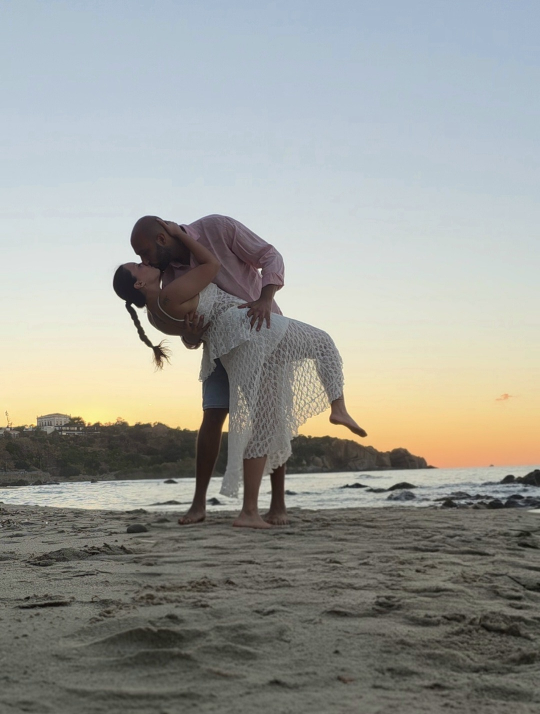

Parrocchia Sant'Anna
Balestrate (PA)
Ore 16:00
Vi chiediamo la gentilezza di presentarvi in chiesa almeno 15 minuti prima dell'inizio.
Come arrivare19 · 06 · 2027
Ci sposiamo!

Balestrate (PA)
Ore 16:00
Vi chiediamo la gentilezza di presentarvi in chiesa almeno 15 minuti prima dell'inizio.
Come arrivarePartinico (PA)
Ore 18:30
Parcheggio privato all'interno della location.
Come arrivareIl giorno più bello della nostra vita lo vogliamo vivere insieme a voi.
Flavia & Salvatore ♥
In chiesa, a Balestrate.
Per chi vorrà, in un bar vicino alla chiesa.
Borgo degli Angeli, a Partinico: circa 15 minuti di macchina.
Cibo, musica e balli per vivere insieme una serata indimenticabile.
Un brindisi sotto le stelle e gli ultimi momenti di festa fino all'una circa.
Gli orari dopo la cerimonia sono indicativi.
Non dimenticatevi la data
L'eleganza delle grandi occasioni
Indossate il vostro abito più bello per celebrare insieme a noi un giorno indimenticabile.
Raggiungere la cerimonia
Troverete parcheggio negli stalli adiacenti alla chiesa o lungo la vicina spiaggia, per poi raggiungerci con una breve e piacevole passeggiata. Essendo un periodo estivo e vivace, vi suggeriamo di arrivare con un piccolo anticipo per godervi l'atmosfera in totale serenità.
L'arrivo al Borgo
Ad accogliervi al Borgo degli Angeli troverete un comodo parcheggio privato all'interno della struttura, per lasciarvi guidare senza pensieri nella festa.
Il vostro soggiorno
Per chi desidera accompagnarci da più lontano, nei dintorni di Balestrate e Partinico troverete deliziose strutture e hotel pronti ad accogliervi.
Sogniamo che questa festa sia molto più di un giorno speciale: un'occasione preziosa per riabbracciare le nostre famiglie, condividere momenti felici e farvi innamorare dei profumi e delle meraviglie della nostra Sicilia, magari concedendovi un tuffo rigenerante nelle sue acque cristalline.
Quale colore accompagnerà il nostro giorno più bello? Esprimete il vostro voto e scoprite la scelta più votata dagli invitati. Se curiosi, provate i tre pallini colorati in basso a sinistra per vestire il sito con le diverse sfumature!
Vi chiediamo di confermare la vostra presenza o assenza entro il 31 marzo 2027.
Compila i campi: si aprirà WhatsApp con il messaggio già pronto per Salvatore.
Potrai modificare il messaggio prima di inviarlo.
La nostra casa è già piena d'amore e di tutto ciò che ci serve.
Il regalo più grande è avervi al nostro fianco in questo giorno speciale. Se desiderate farci un pensiero, saremo felici di ricevere un contributo per realizzare i nostri sogni futuri e il nostro viaggio.
Grazie di cuore, Flavia e Salvatore
Per chi preferisce un bonifico:
IT28 E030 1503 2000 0000 6338 228
IT97 H030 1503 2000 0000 6348 260